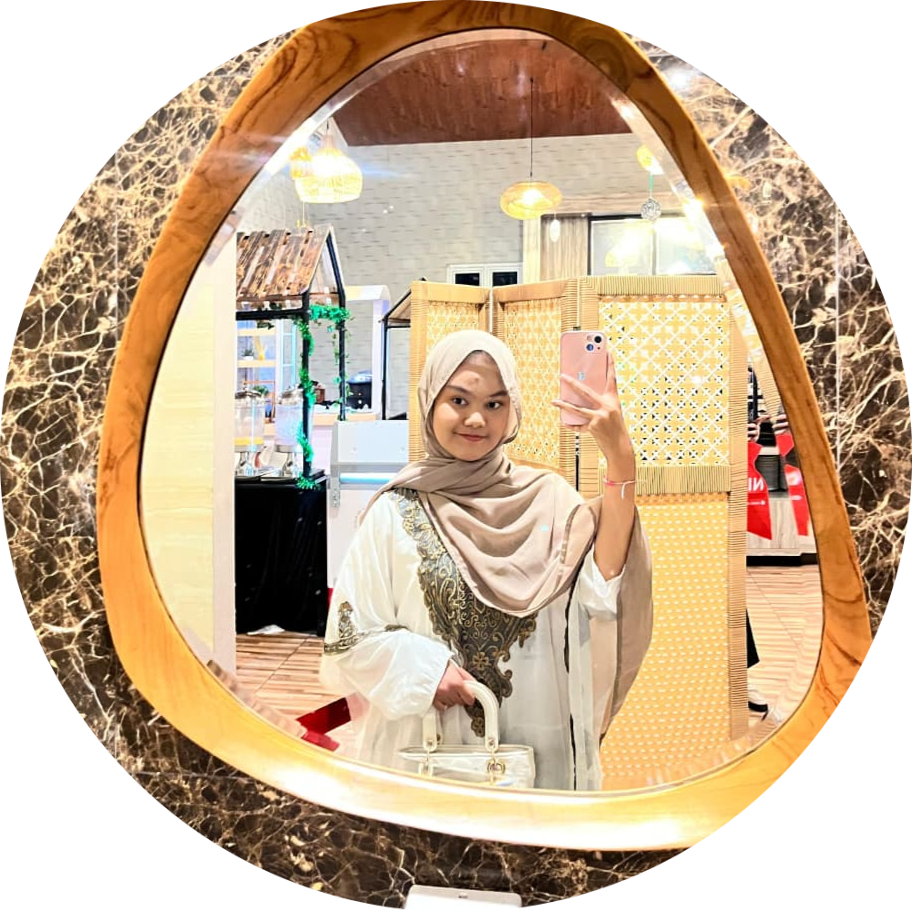

Sistem Informasi
Asisten Lab Sistem Operasi
Bertanggung jawab dalam memandu praktikum mahasiswa, mengelola lingkungan server Linux, dan membantu pemahaman manajemen proses.

fadella's portfolio ✿Eksplorasi pengalaman, kontribusi organisasi, hingga dedikasi saya di bidang teknologi. 🌸
Bertanggung jawab dalam memandu praktikum mahasiswa, mengelola lingkungan server Linux, dan membantu pemahaman manajemen proses.
Program pengabdian masyarakat bersama Dosen FKI UMS dalam mengenalkan dasar pemrograman berbasis AI dan Deep Learning kepada siswa sekolah dasar.
Mengelola komunikasi eksternal forum, membangun relasi antar komunitas IT, dan mempromosikan budaya open source di lingkungan informatika.
Memimpin Departemen Pengembangan Materi dan Evaluasi dalam menyusun kurikulum mentoring fakultas serta menjamin kualitas penyampaian materi.